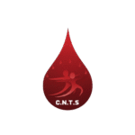

Le système visuel du Centre National de Transfusion Sanguine repose sur le rouge sang du logo, une typographie sobre et lisible, et des composants fonctionnels pensés pour rassurer donneurs et personnel médical.
Conserver une marge libre autour du logo équivalente à la moitié de sa hauteur. Ne pas déformer, recolorer ni ajouter d'ombre portée non prévue.
Le rouge sang est la couleur de marque. Les neutres chauds structurent l'interface ; les couleurs fonctionnelles signalent l'état des réserves.
Titres · chiffres
Interface · texte